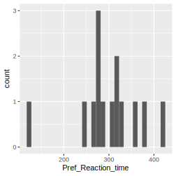
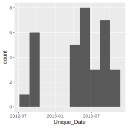
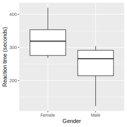

Chapter 14 Answers and solutions
14.1 Preface
Q0.1 Who is the intended audience/users/readers of Insights?
A, C, and D are correct. Insights is intended for beginner scientists in the life and environmental scientist that will be working with quantitative data. Our other book, Getting Started with R is for folk that what an introduction to R and who already know a bit about data analysis (just not in R).
B: If you already have good knowledge of data analysis and statistics and need an introduction to R, you might like to look at our other book, Getting Started with R, 2nd Edition.
Q0.2 Insights teaches a newer (i.e. tidyverse) approach to using R, and not what might be called the “classic” or “traditional” approach. What does this mean?
A, C, D, and E are correct. We teach the newer (tidyverse) approach in our own Undergraduate-Level Introduction to Data Analysis courses. It works really well. The newer (tidyverse) approach is not advanced R, it is simple, intuitive, and powerful R.
Insights contains not a single square bracket or dollar sign.
Q0.3 Insights is a book about the process of getting insights from data, and yet it contains no statistical analyses (e.g. no regression, ANOVA, linear models, or generalised linear models. Why are such things not included?
Every answers is a good reason for starting learning about data analysis without considering statistics.
Q0.4 What proportion of a data analyists time and effort is spent on tasks such as preparation, import, cleaning, tidying, checking, double-checking, manipulating, summarising and visualizating data?
We write “about 80%”. Though really we just mean a lot. Care and attention to this work is essential to provide a found foundation dataset from which to derive insights.
Q0.5 From where do you get the datasets that you need to work along with the demonstrations in the book?
Only D is correct. You get the data from the online data repositories where the authors of the original studies deposited their data. Unlike the majority of Introduction to Data Analysis books, Insights starts from the usual dirty and messy state data usual begins in. Its lot of work, but absolutely essential work to do safely and reliably, to get the data tidy, clean, and arranged so that visualisation and summarisation (and in the end, statistics) are straightforward and efficient, and that the insights derived from them are accurate, reliable, and robust.
Q0.6 Natalie.
Q0.7 Owen.
Q0.8 Andrew.
Q0.9 Dylan.
14.2 Chapter 1 (Introduction)
Q1.1 Yes, it is possible to get insights from data without all these things. And we think doing so is a great starting point to learn fundamental skills for getting insights from data. Getting insights from more complex and larger datasets than used in the book can, however, be greatly assisted by statistical models, machine learning, and many other more advanced methods.
Q1.2 We will focus on important characteristics of the data and the patterns in it. We are more likely to think about the strength of and practical importance of patterns in the data. We are less likely to focus on statistical significance at the expense of everything else.
Q1.3 Out of the four options given, a question is the first we should think about. The clearer and more specific the better. Making a clear and specific question can be assisted by sketching a graph. We must be careful to minimise the possibility for our insights to be affected by what we would like to find.
Q1.4 With a randomised manipulative experiment we have a chance of inferring causation… that changing somethings caused a change in something else. On the down side, logistical constraints of make such experiments occur in rather controlled and less realistic settings than other types of studies.
Q1.5 We focus on rectangular data, i.e. a table of data with rows and columns. A spreadsheet is an example of such rectangular data. We focus on this as it is a simple, useful, and flexible way of arranging data. Furhtermore, there are many convenient and powerful approaches for working with data thus arranged.
Q1.6 A response variable contains the data (measurements/observations) that we are interested in understand the variation in. This is the variable that is “responding” to other variables. It is also know as the dependent variable. Typically we put the response variable on the y-axis of a graph (i.e. we map variation in the response variable to variation along the y-axis).
Q1.7 An explanatory variable is a variable that contains measurements that can explain variation in a response variable. They are also termed the “independent” variable and the “predictor” variable. The rationale for these names is that an explanatory variable is not dependent on other variables, and can be used to predict variation in the response variable.
Q1.8 The five given in Insights are 1) the number of observations, 2) the number of variables, 3) if variables describe the manipulations of a randomised experiment, 4) correlation among the variatbles, and 5) how independent are the observations. See the text of the book for why we think these are important. Great if you have thought of other important features… drop us a line to let us know.
Q1.9 The all concern food!
**Q1.10* Perhaps lots were missing, and some of the presented steps could be broken up into multiple steps. Its always risky to present a general recipe for something as ultimately diverse as getting insights from data. Still, its a good idea to start somewhere. The missing step mentioned was communication, by the way.
14.3 Chapter 2 (Getting Acquainted)
Q2.1 True or false: R and RStudio are the same software program?
This is false. They are two separate programs. RStudio is like a helper program that surrounds R. We only use R via RStudio. Because they’re separate programs we must update each. I.e. updating one will not update the other.
Q2.2 What will R tell us if we type into the Console 1 + 3 * 3?
The answer is 10. R does the multiplication first, as it should.
Q2.3 What will R tell us if we type into the Console log(100)?
The answer is 4.60517. This is because the log function is the natural log, often written as “ln”. If you answered 2 you were thinking of log10(100)
Q2.5 How would we assign to the name “my_constant” the value of “log(100)”?
my_constant <- log(100)
Q2.5 What commands should we be typing directly into the Console?
Any that we know that we don’t want to remember and don’t want to use again. I.e. very very few. The vast majority we type in our script, and then “send” to the Console. This practice will result in our script containing a complete record of everything we did.
Q2.6 What is the error in the code?
In the second line of code the name my_x_variable was mispelled (the second “a” was missing). Hence we get the error: object 'my_x_variable' not found.
Q2.7 When we give a function some arguments, when should we name the arguments?
Name them whenever you are not sure about what order the function expects the arguments in. When staring with R, it can be comforting to always name the arguments, and then to relax this when one becomes more used to what individual functions expect.
Q2.8 True or false: it is a good time to have a the top of our script a command to install each of the packages we would like to use.
False. Do not do this. We only need to load the add-on package with, for example, library(dplyr). Installing packages every time you run your code is a waste of time.
Q2.9 True or false: When asking help from others it is sufficient to email them a verbal description of the problem, and a copy of the error message R gave.
False. This will rarely be enough for someone to help find the problem. Even sending the line of code that produces the error is often not sufficient. Better to send more code than less, and if possible code that works, at least up until if fails. And send sample data if the code reads in and uses data.
Q2.10 If RStudio freezes, are we going to lose all our work?
Probably not. RStudio has very likely autosaved the very latest version of our script. Just in case, attempt to copy the script from RStudio and paste it somewhere safe, before then restarting RStudio.
14.4 Chapter 3 (Workflow Demonstration–Part 1)
Q3.1. Bat_ID is numeric, but these are identities (i.e. names). They could just as well be words. Leaving them as numbers could allow us to do something stupid, like involving them in a calculation. Using numbers in such situation can also result in ggplot not doing what we’d like, for example would lead to a colour gradient rather than discrete colours if we mapped the numerical variable to the colour aesthetic.
Q3.2 Get the number of bats caught on each date with a group_by Bat_ID and Date_proper piped into a summarise to get the unique Bat_IDs, then make another group_by but this time on the Date_proper variable and use the n() function to count the number of bats per date:
bats_per_date <- bats %>%
group_by(Bat_ID, Date_proper) %>%
summarise(Unique_Bat_ID = unique(Bat_ID)) %>%
group_by(Date_proper) %>%
summarise(Number = n())Here is a group of number of bats caught on each date:
bats_per_date %>%
ggplot() +
geom_point(aes(x = Date_proper, y = Number)) +
ggtitle("Number of bats caught on each date.")
Q3.3 Calculate the total number of prey species by counting the number of unique prey species:
## # A tibble: 1 x 1
## total_num_prey_species
## <int>
## 1 115Q3.4 Calculate number of migratory and non-migratory, and pest or non-pest, and each combination of migratory and pest.
## # A tibble: 2 x 2
## Migratory total_num_prey_species
## <chr> <int>
## 1 no 94
## 2 yes 21## # A tibble: 2 x 2
## Pest total_num_prey_species
## <chr> <int>
## 1 no 86
## 2 yes 29## # A tibble: 4 x 3
## Migratory Pest total_num_prey_species
## <chr> <chr> <int>
## 1 no no 78
## 2 no yes 16
## 3 yes no 8
## 4 yes yes 13Q3.5 Plot at the shape of the distribution of dates on which poop samples were collected.
bats %>%
group_by(Date_proper) %>%
summarise(Unique_Date = unique(Date_proper)) %>%
ggplot() +
geom_histogram(aes(x = Unique_Date), bins = 10)
Q3.6 Plot the distribution of number of reads.
## `stat_bin()` using `bins = 30`. Pick better value with `binwidth`.
From the shape, we expect the mean to be greater than the median.
## # A tibble: 1 x 2
## mean_num_reads median_num_reads
## <dbl> <dbl>
## 1 7700. 2741Q3.7 Get the number of species of Noctuidae and Geometridae in the dataset.
## Solution
families <- bats %>%
select(Species, Order, Family) %>%
distinct() %>%
group_by(Order, Family) %>%
summarize(num_spp=n())
families %>%
filter(Family %in% c("Noctuidae", "Geometridae"))Q3.8 The paper states that 56.9±36.7% were migratory moth species. Calculate this yourself.
In this solution we calculate the proportion migratory in the diet of each bat, then calculate the mean and standard deviation of these proportions. The answer we find is not the same as in the paper, though we are not sure why.
bats %>%
group_by(Bat_ID, Migratory) %>%
summarise(num_prey=n()) %>%
spread(key=Migratory, value=num_prey) %>%
mutate(no=ifelse(is.na(no), 0, no),
yes=ifelse(is.na(yes), 0, yes),
perc_migratory=yes/(yes+no)) %>%
ungroup() %>%
summarise(mean(perc_migratory),
sd(perc_migratory))Q3.9 Confirm the results from the paper: Moths (Lepidoptera; mainly Noctuidae and Geometridae) were by far the most frequently recorded prey, occurring in nearly all samples and accounting for 96 out of 115 prey taxa.
Q3.10 Confirm the results from the paper: Each pellet [poo] contained on average 4.1 ± 2.2 prey items
A slightly different answer to that in the paper. We are not sure why.